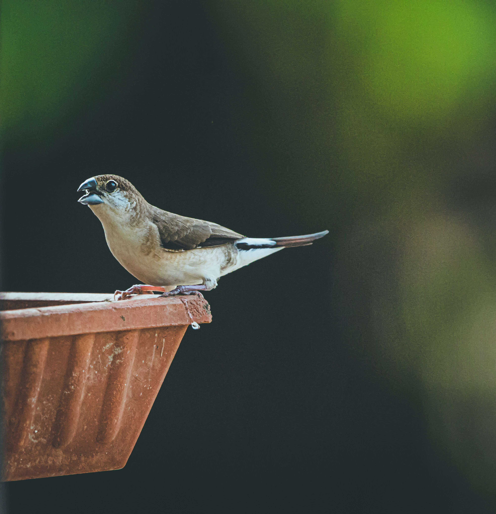

The Indian Silverbill is a small finch-like munia with a pale brown body, whitish underparts, a blackish bill, and a distinctive pale rump. It is usually found in dry grasslands, scrub, agricultural areas, and open woodland, where it feeds mainly on grass seeds. It is social and often travels in small flocks, particularly outside the breeding season.